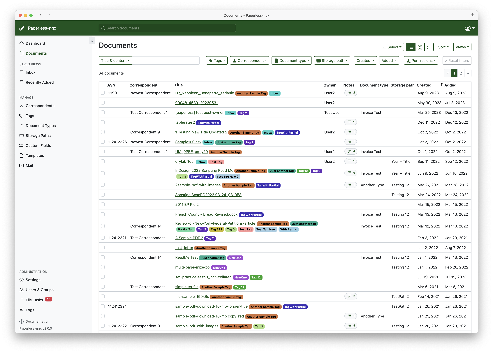
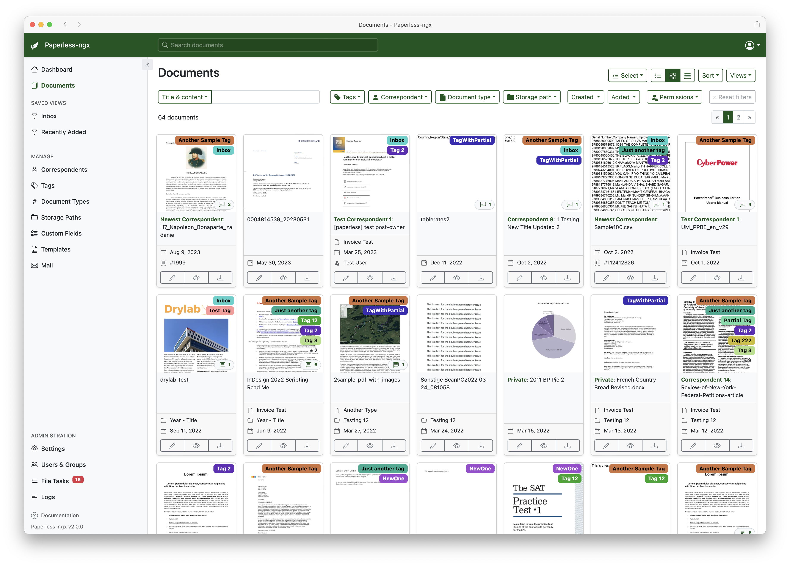
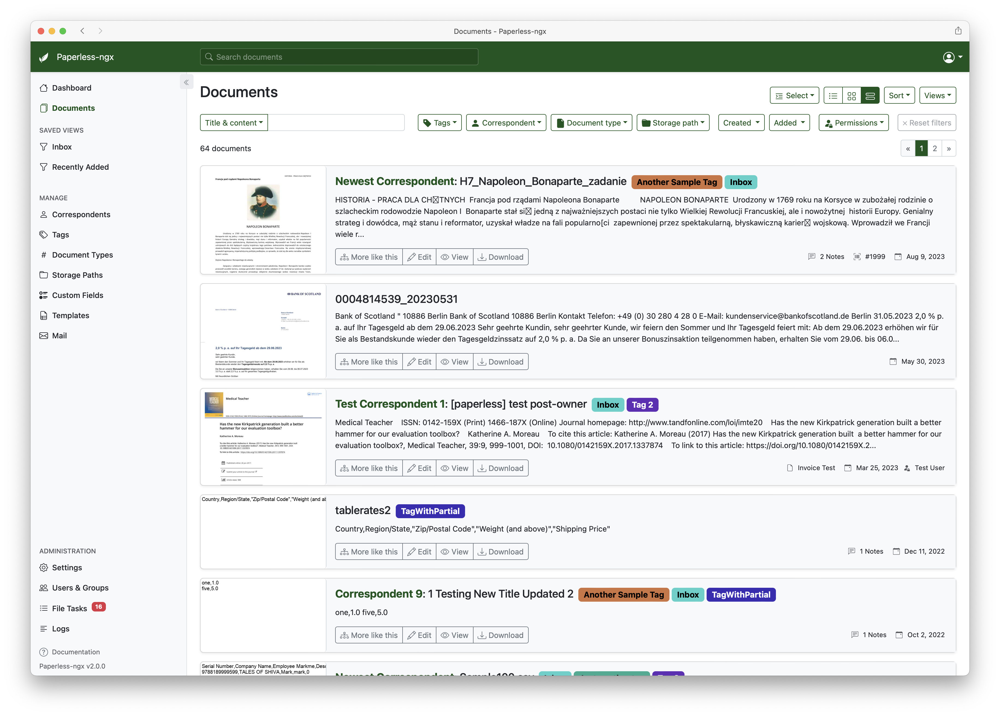

Home


功能特性
- 组织和索引：使用标签、通信方、类型等对扫描文档进行组织和索引。
- 你的 数据 存储在 你的 服务器本地，除非你明确选择，否则绝不会以任何方式传输或共享。
- 对文档执行 OCR（光学字符识别），为文档添加可搜索和可选择的文本，即使是仅包含图像的扫描文档。
- 利用开源的 Tesseract 引擎，支持识别超过 100 种语言。
- 新功能！ 支持使用 Azure AI 进行远程 OCR（可选启用）。
- 文档以专为长期存储设计的 PDF/A 格式保存，同时保留未经修改的原始文件。
- 利用机器学习自动为文档添加标签、通信方和文档类型。
- 新功能：Paperless-ngx 现在可以利用 AI（大型语言模型或 LLM）提供文档建议。这是一个可选功能，可以启用（默认禁用）。
- 支持 PDF 文档、图像、纯文本文件、Office 文档（Word、Excel、PowerPoint 及其 LibreOffice 等效格式）1 等。
- Paperless 将你的文档以纯文件形式存储在磁盘上。文件名和文件夹由 Paperless 管理，其格式可以自由配置，并且可以为不同的文档分配不同的配置。
- 美观、现代的 Web 应用程序，具有以下特点：
- 可自定义的仪表板，包含统计信息。
- 可按标签、通信方、类型等进行筛选。
- 批量编辑标签、通信方、类型等。
- 在整个应用程序中支持拖放上传文档。
- 可保存的自定义视图，可以显示在仪表板和/或侧边栏上。
- 支持各种数据类型的自定义字段。
- 可共享的公共链接，支持设置过期时间。
- 全文搜索 帮助你找到所需内容：
- 自动补全功能会从你的文档中建议相关词汇。
- 搜索结果按与搜索查询的相关性排序。
- 高亮显示文档中与查询匹配的部分。
- 搜索相似文档（"更多类似内容"）。
- 电子邮件处理1：从你的电子邮件账户导入文档：
- 为每个账户配置多个账户和规则。
- 处理完成后，Paperless 可以对邮件执行操作，例如标记为已读、删除等。
- 内置强大的 多用户权限 系统，支持"全局"权限以及针对每个文档或对象的权限。
- 强大的工作流系统，为你提供更多控制权。
- 针对多核系统优化：Paperless-ngx 可以并行处理多个文档。
- 集成的完整性检查器确保你的文档档案库处于良好状态。
Paperless 的历史
Paperless-ngx 是原始 Paperless 和 Paperless-ng 项目的官方继任者，旨在将推进和支持项目的责任分配给一个团队。考虑加入我们吧！
关于这些项目之间过渡的进一步讨论，请参阅： ng#1599 和 ng#1632。
截图
Paperless-ngx 力求既实用又好用。请查看下面的一些截图。

仪表板显示已保存的视图，这些视图可以排序。可以通过按钮上传文档，或者将文档拖放到应用程序的任何位置。
文档列表提供了三种不同的样式来浏览你的文档。
  
使用"精简"侧边栏来专注于你的文档，并最小化用户界面。
当然，Paperless-ngx 也支持深色模式：
通过广泛的筛选机制快速查找文档。

执行批量编辑操作来设置标签、通信方等以及权限。

文档的并排编辑。

支持自定义字段。
强大的权限系统，支持"全局"权限和文档/对象权限。
搜索提供自动补全功能并高亮显示结果。


标签、通信方、文档类型和存储路径的编辑。


邮件规则支持对收到的电子邮件进行各种筛选和操作。

工作流提供对文档处理流程的更精细控制并触发操作。

支持移动设备。

{kind=link}
{kind=link}
{kind=link}
{kind=link}
{kind=link}
{kind=link}
{kind=link}
{kind=link}
{kind=link}
{kind=link}
{kind=link}
{kind=link}
支持
社区支持可通过 GitHub Discussions 和 Matrix 聊天室 获得。
功能请求
功能请求可以通过 GitHub Discussions 提交，你可以在那里搜索现有的想法、添加你自己的想法，并为你关心的想法投票。
错误报告
对于错误，请 提交一个问题，或者如果你有疑问，可以 发起一个讨论。
贡献
鼓励有兴趣继续参与 Paperless-ngx 工作的人们通过 GitHub 或 Matrix 聊天室 联系我们。如果你想长期为项目做贡献，多个团队（前端、CI/CD 等）都需要你的帮助，请随时联系我们！
翻译
Paperless-ngx 支持多种语言，翻译工作通过 Crowdin 协调。如果你想通过将 Paperless-ngx 翻译成你的语言来提供帮助，请前往 Crowdin 上的 Paperless-ngx 项目，谢谢！
扫描仪与软件
Paperless-ngx 兼容许多不同的扫描仪和扫描工具。用户维护的扫描仪和其他软件列表可在 wiki 上找到。